[!WARNING] working in progress
running llama factory using ray on openshift ai
Customer wants to try running llama factory on OpenShift AI. We know that we can run llama factory on openshift using deployment, but this requires additional configuration like image building and deployment configuration, like setting start up configuration parameters. The most difficult part is to get the master/head’s ip address, and set to worker task’s parameter to ensure that the workers can communicate with the master node.
[!NOTE] In recently commits, llama factory support ray, but with some limitation.
In this artical, we try to set up the openshift ai env, and start a llama factory distribution training task involving deepspeed.
The logic diagram illustrating the process flow for setting up and running LLaMA Factory on OpenShift AI:
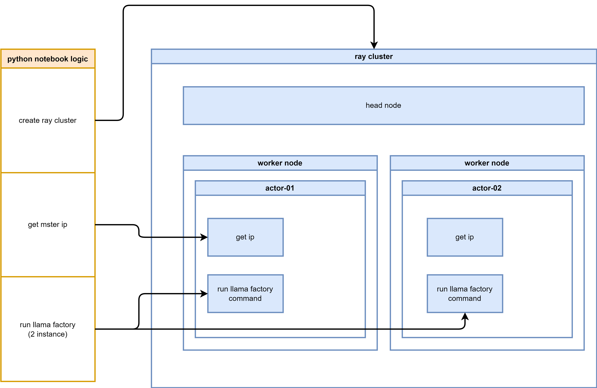
The logic diagram illustrating the process flow for setting up and running LLaMA Factory on OpenShift AI with Ray:
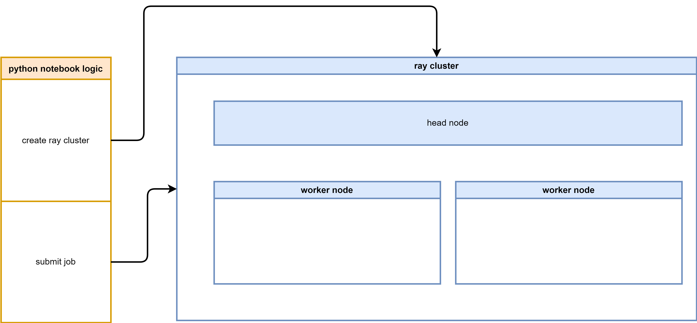
We will use such source code, listed here:
- https://github.com/wangzheng422/LLaMA-Factory/tree/wzh-stable/wzh
- python notebook to run llama factory in python venv mode
- python notebook to run llama factory in python direct mode (with deepspeed)
- python notebook to run llama factory with build-in ray support
run using llama factory offical way
To run llama factory using ray, we need first to understand how to run llama factory. So we try to run llama factory using native method, and get familiar with the llama factory’s execution process and its requirements.
run directly on os
We try to run everything on a rhel9 linux server. As a best practice, it is better to run everything on a vm, if everything is ok, we can wrap it into a container later.
# download the model first
dnf install -y conda
mkdir -p /data/env/
conda create -y -p /data/env/hg_cli python=3.11
conda init bash
conda activate /data/env/hg_cli
# conda deactivate
# python -m pip install --upgrade pip setuptools wheel
pip install --upgrade huggingface_hub
# for Maykeye/TinyLLama-v0
VAR_NAME=Maykeye/TinyLLama-v0
VAR_NAME_FULL=${VAR_NAME//\//-}
echo $VAR_NAME_FULL
# THUDM-ChatGLM2-6B
mkdir -p /data/huggingface/${VAR_NAME_FULL}
cd /data/huggingface/${VAR_NAME_FULL}
while true; do
huggingface-cli download --repo-type model --revision main --cache-dir /data/huggingface/cache --local-dir ./ --local-dir-use-symlinks False --exclude "*.pt" --resume-download ${VAR_NAME}
if [ $? -eq 0 ]; then
break
fi
sleep 1 # Optional: waits for 1 second before trying again
done
# install and try llama factory
mkdir -p /data/git
cd /data/git
git clone -b wzh-stable https://github.com/wangzheng422/LLaMA-Factory
cd /data/git/LLaMA-Factory
pip install -e ".[torch,metrics]"
/bin/rm -rf saves/tinyllama
llamafactory-cli train wzh/tinyllama_lora_sft.yamlwrap into a container
We can run smoothly on os, now we wrap it into container.
# build the docker image based on offical pytorch image
cd /data/git/LLaMA-Factory
/bin/rm -rf ./huggingface/Maykeye-TinyLLama-v0
mkdir -p ./huggingface/Maykeye-TinyLLama-v0
/bin/cp -r /data/huggingface/Maykeye-TinyLLama-v0 ./huggingface/Maykeye-TinyLLama-v0
podman build -t quay.io/wangzheng422/qimgs:llama-factory-20241225-v01 -f wzh/cuda.Dockerfile .
podman run --rm -it quay.io/wangzheng422/qimgs:llama-factory-20241225-v01 /bin/bash
podman push quay.io/wangzheng422/qimgs:llama-factory-20241225-v01try run multiple instances of the LLaMA factory
We have successfully set up the environment and built the container image, next, we will try to run multiple instances of the LLaMA factory using docker/podman.
# create a pod network
podman network create llama-factory-network --subnet 10.5.0.0/24
podman pod create --name llama-factory-pod --network llama-factory-network
mkdir -p /data/instance/output
mkdir -p /data/instance/saves
# first instance
podman run --rm -it --pod llama-factory-pod \
--network llama-factory-network \
--ip 10.5.0.3 \
-v /data/instance/output:/app/output:Z \
-v /data/instance/saves:/app/saves:Z \
quay.io/wangzheng422/qimgs:llama-factory-20241225-v01 \
/bin/bash
FORCE_TORCHRUN=1 NNODES=2 NODE_RANK=0 MASTER_ADDR=10.5.0.3 MASTER_PORT=29500 NPROC_PER_NODE=1 llamafactory-cli train wzh/tinyllama_lora_sft.yaml
# 2nd instance
podman run --rm -it --pod llama-factory-pod \
--network llama-factory-network \
-v /data/instance/output:/app/output:Z \
-v /data/instance/saves:/app/saves:Z \
quay.io/wangzheng422/qimgs:llama-factory-20241225-v01 \
/bin/bash
FORCE_TORCHRUN=1 NNODES=2 NODE_RANK=1 MASTER_ADDR=10.5.0.3 MASTER_PORT=29500 NPROC_PER_NODE=1 llamafactory-cli train wzh/tinyllama_lora_sft.yaml
We can not make it run on multiple nodes, because we do not
have nvidia gpu, the torchrun will fallback to MPI, which llama
factory seems has bugs, it can not check local rank, all the
node will be rank=0, which will make the
DistributedDataParallel failed.
But this will not stop us, our target is to run the multiple
node task using ray job to manage the distributed
training effectively. The job failed does not deter us from
exploring alternative solutions.
run multiple instance using ray based image
We can run llama factory using offical ways. Next, we want to test how to run llama factory using ray platform which is integrated into openshift ai by default.
Llama factory DOSE support ray based on this issues, but it is just 2 days ago based on the time of this writing. So we first try to run llama factory using old cli. Later, we will try to run it in native ray way.
build image
First, we build the Docker image using the ray.dockerfile, which is based on ray upstream docker file, and merge llama factory docker file.
cd /data/git/LLaMA-Factory
podman build -t quay.io/wangzheng422/qimgs:llama-factory-ray-20250109-v01 -f wzh/ray.dockerfile .
podman run --rm -it quay.io/wangzheng422/qimgs:llama-factory-ray-20250106-v07 /bin/bash
podman push quay.io/wangzheng422/qimgs:llama-factory-ray-20250109-v01using venv, we also try to install llama factory python dependency into a seperate venv.
cd /data/git/LLaMA-Factory
podman build -t quay.io/wangzheng422/qimgs:llama-factory-ray-20250106-v06 -f wzh/ray.venv.dockerfile .
podman run --rm -it quay.io/wangzheng422/qimgs:llama-factory-ray-20250106-v06 /bin/bash
podman push quay.io/wangzheng422/qimgs:llama-factory-ray-20250106-v06try to run multipe node
Then, we try to run multiple node using the ray based image, by start multiple container instance.
# first instance
podman run --rm -it --pod llama-factory-pod \
--network llama-factory-network \
--ip 10.5.0.3 \
-v /data/instance/output:/app/output:Z \
-v /data/instance/saves:/app/saves:Z \
quay.io/wangzheng422/qimgs:llama-factory-ray-20241226-v01 \
/bin/bash
FORCE_TORCHRUN=1 NNODES=2 NODE_RANK=0 MASTER_ADDR=10.5.0.3 MASTER_PORT=29500 NPROC_PER_NODE=1 llamafactory-cli train wzh/tinyllama_lora_sft.yaml
# 2nd instance
podman run --rm -it --pod llama-factory-pod \
--network llama-factory-network \
-v /data/instance/output:/app/output:Z \
-v /data/instance/saves:/app/saves:Z \
quay.io/wangzheng422/qimgs:llama-factory-ray-20241226-v01 \
/bin/bash
FORCE_TORCHRUN=1 NNODES=2 NODE_RANK=1 MASTER_ADDR=10.5.0.3 MASTER_PORT=29500 NPROC_PER_NODE=1 llamafactory-cli train wzh/tinyllama_lora_sft.yamltry to run in deepspeed
Llama factory embeded deepspeed, so we try to run the training with deepspeed.
# first instance
podman run --rm -it --pod llama-factory-pod \
--network llama-factory-network \
--ip 10.5.0.3 \
quay.io/wangzheng422/qimgs:llama-factory-ray-20250106-v07 \
/bin/bash
FORCE_TORCHRUN=1 NNODES=2 NODE_RANK=0 MASTER_ADDR=10.5.0.3 MASTER_PORT=29500 NPROC_PER_NODE=1 llamafactory-cli train wzh/tinyllama_lora_sft_dp.yaml
# 2nd instance
podman run --rm -it \
--pod llama-factory-pod \
--network llama-factory-network \
quay.io/wangzheng422/qimgs:llama-factory-ray-20250106-v07 \
/bin/bash
FORCE_TORCHRUN=1 NNODES=2 NODE_RANK=1 MASTER_ADDR=10.5.0.3 MASTER_PORT=29500 NPROC_PER_NODE=1 llamafactory-cli train wzh/tinyllama_lora_sft_dp.yaml
The result turns out relative good, we can run llama factory with deepspeed using local podman containers.
run llama factory
Now, we try to run with openshift ai. First, create notebook env by launch the jupyter application.
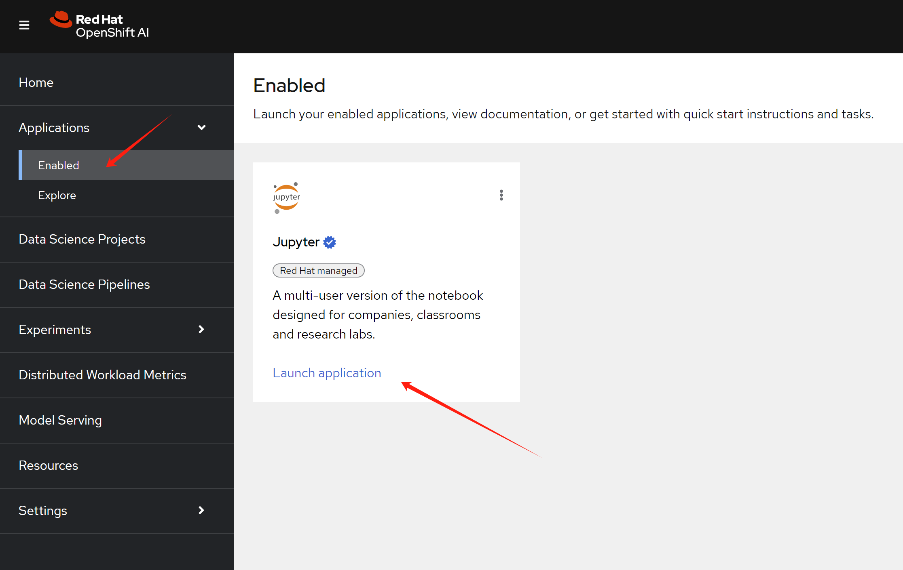
Then, select the data science notebook image
type.
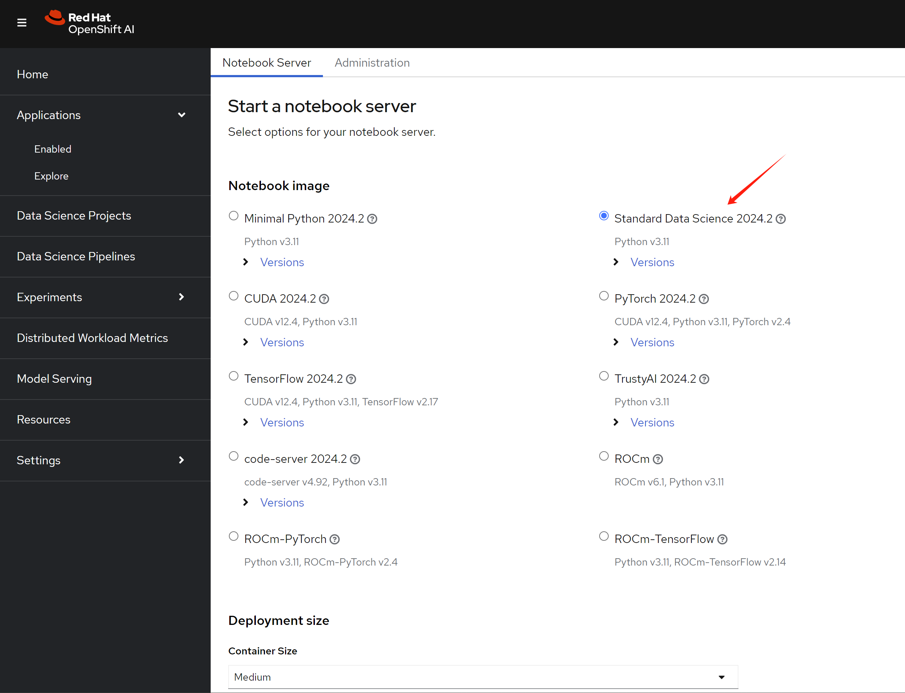
After entering into jupyter, upload the example notebook into the env.
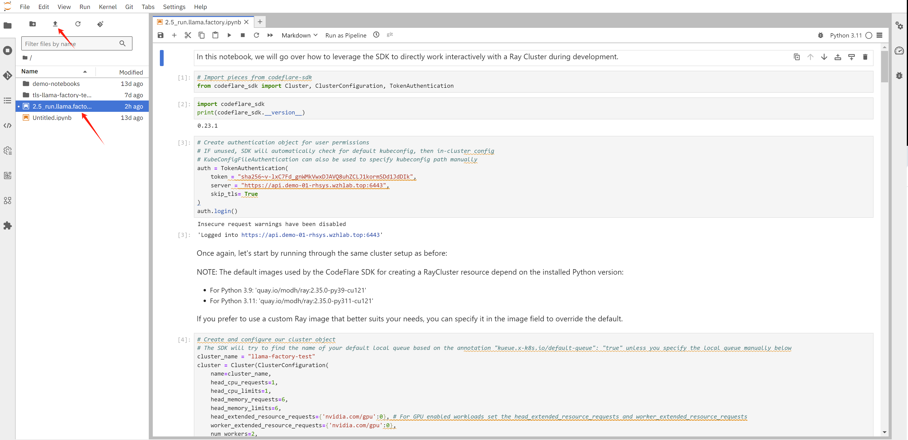
The notebook will create ray cluster, and create job in the ray cluster, it will create 2 actor, and collect ip address of the actors, then it will call actor’s function, to start llama factory command line, and then to start the training.
We can see the ray dashboard.
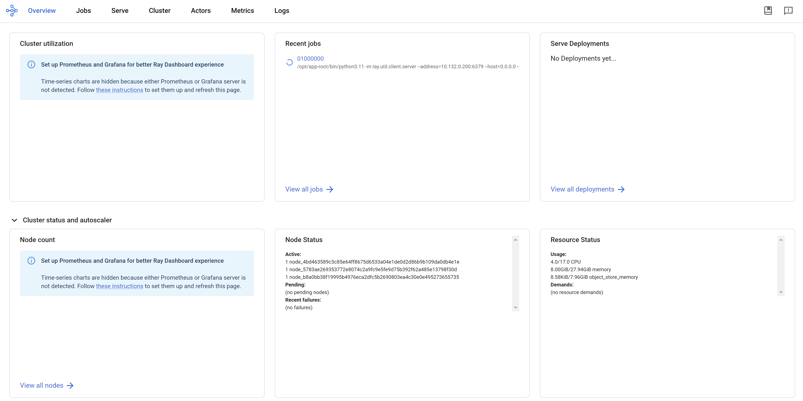
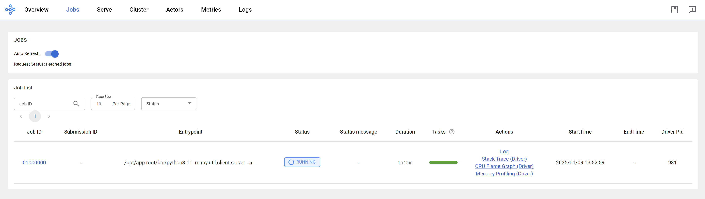
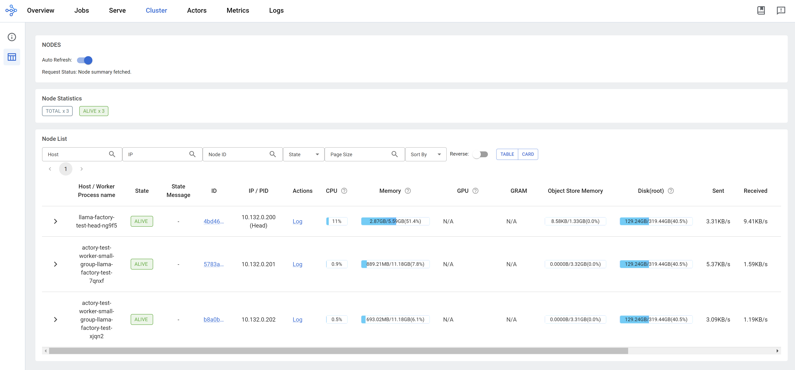
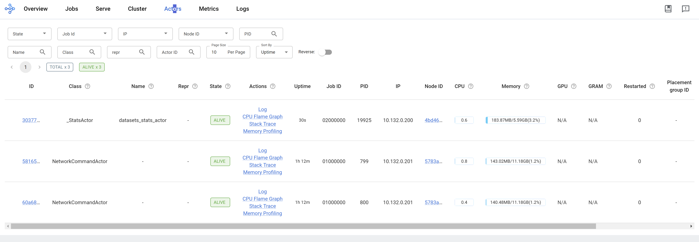
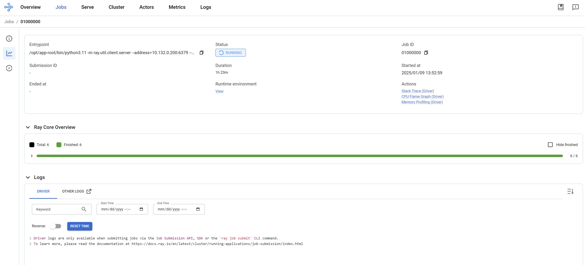
run llama factory in ray mode
Based on llama factory issue, it supports ray framework, so we can import this notebook into jupyter to try it out.
But currently, llama factory only support GPU node, we can not test it on CPU node. But the notebook can run, you can test it on GPU node.
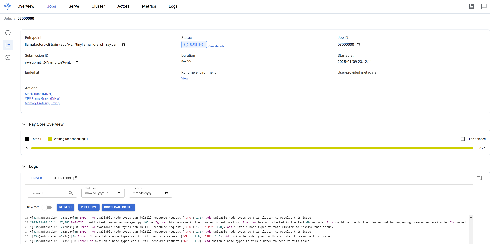